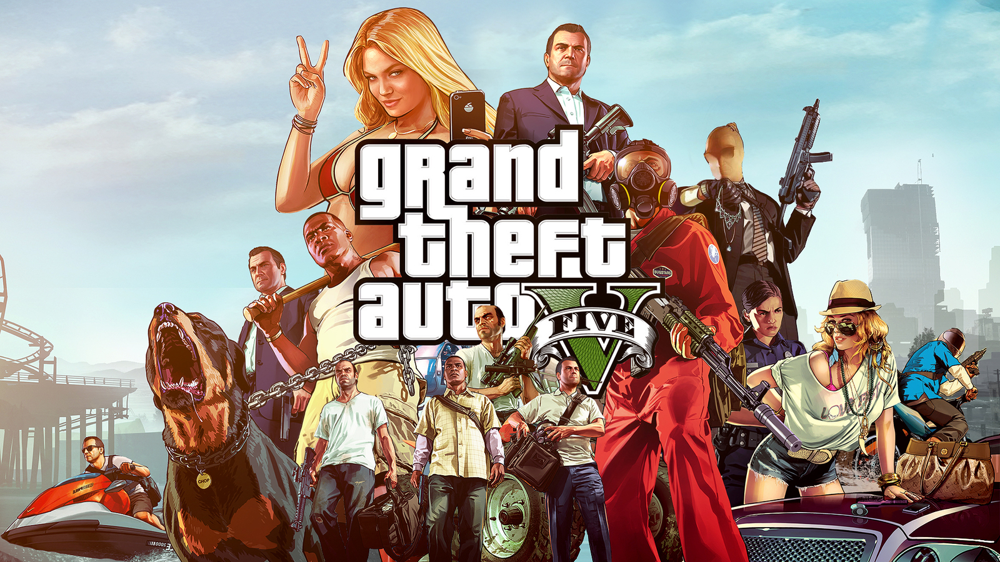

Un videojuego de acción es un videojuego en el que el jugador debe usar su velocidad, destreza y tiempo de reacción. Entre los diversos géneros de videojuegos, el género de acción es el más amplio y abarcativo, englobando muchos subgéneros como videojuegos de lucha, videojuegos de disparos en primera persona, beat 'em ups y videojuegos de plataformas.
